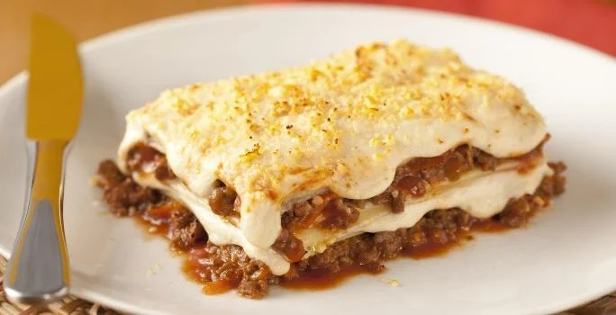

Lasanha à Bolonhesa

Resumo
A receita de lasanha de carne moída é um prato amado entre muitos
brasileiros, pois é muito saboroso e prático de preparar. É também
conhecida como lasanha à bolonhesa, por ter sua origem na cidade
de Bolonha, Itália. Apesar de já ter sido mencionada em textos passados,
a primeira aparição da receita foi em um livro culinário escrito
no século XIV entitulado Liber de Coquina.
Nesse artigo eu irei ensinar como preparar esse delicioso
prato. Detalhando os ingredientes e modo de preparo.
Ingredientes
- 500g de massa de lasanha
- 2 caixas de creme de leite
- 3 colheres de farinha de trigo
- 500g de mussarela
- 2 copos de leite
- 3 colheres de óleo
- 3 dentes de alho amassados
- 500g de carne moída
- 3 colheres de manteiga
- 500g de presunto
- sal a gosto
- 1 cebola ralada
- 1 caixa de molho de tomate
- 1 pacote de queijo ralado
Preparo
- Lasanha: Cozinhe a massa segundo as orientações do fabricante, despeje em um refratório com água gelada para não grudar e reserve.
- Molho à Bolonhesa: Refogue o alho, a cebola, a carne moída e o molho de tomate. Deixe cozinhar por 3 minutos e reserve.
- Molho Branco: Derreta a margarina, coloque as 3 colheres de farinha de trigo e mexa.
- Despeje o leite aos poucos e continue mexendo.
- Por último, coloque o creme de leite, mexa por 1 minuto e desligue o fogo.
- Montagem: Despeje uma parte do molho à bolonhesa em um refratório, a metada da massa, a metade do presunto, a metade da mussarela, todo o molho branco e o restante da massa.
- Repita as camadas até a borda do recipiente
- Finalize com o queijo ralado e leve ao forno alto(220° C), preaquecido, por cerca de 20 minutos.
Concluíndo
A receita de lasanha de carne moída, também conhecida como lasanha à bolonhesa, é um clássico! Aliás, você sabia que a lasanha é um prato superfamoso no mundo inteiro? Ela pode ter vários molhos e recheios. Seu nome deriva da sua montagem em camadas: lasanha significa "pote de cozinhar".
Receita de lasanha nunca tem certo ou errado, cada um tem a sua, normalmente passada de geração em geração, certo? Mas se você gostou dessa receita, não esqueça de compartilhar com a familha e os amigos!
Volte ao início